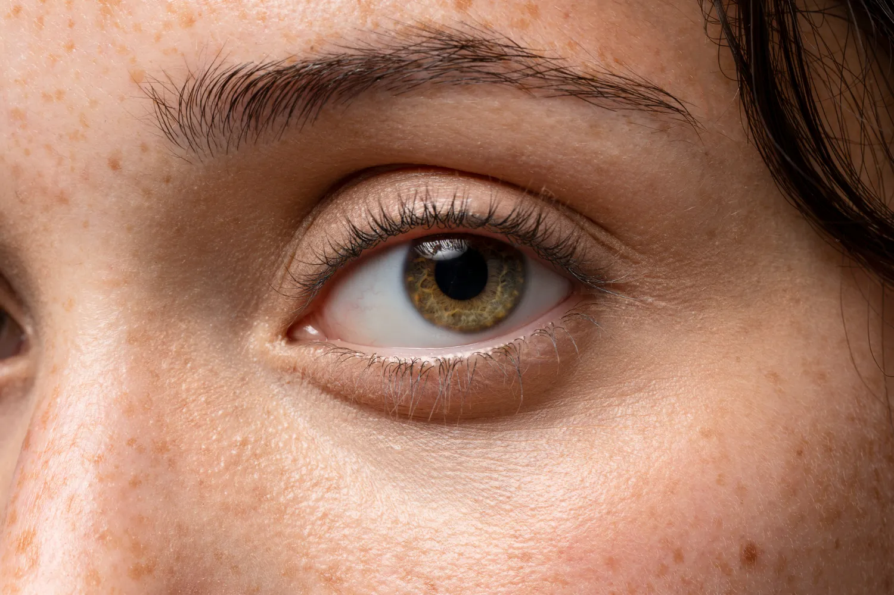
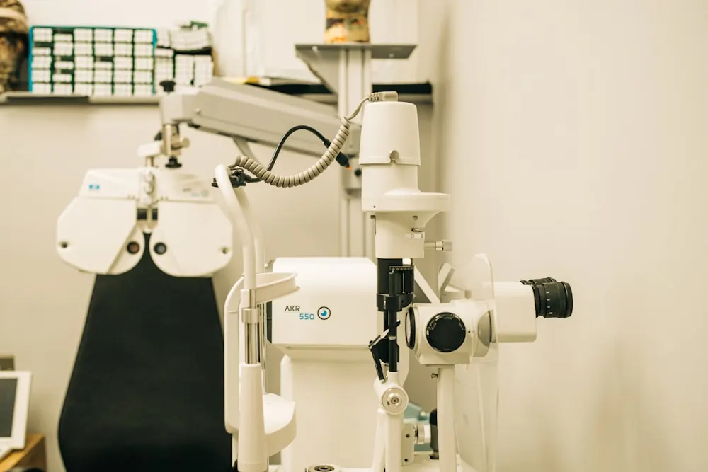

Queratocono
Es una enfermedad degenerativa que deforma y adelgaza progresivamente la córnea, provocando visión distorsionada. Aparece en la juventud y es especialmente frecuente en Ecuador. Detectarlo a tiempo es clave para frenar su avance.

Córnea, catarata, retina y vítreo, glaucoma y cirugía refractiva. Cada área con diagnóstico de precisión y tratamiento a cargo de nuestros especialistas.
Es una enfermedad degenerativa que deforma y adelgaza progresivamente la córnea, provocando visión distorsionada. Aparece en la juventud y es especialmente frecuente en Ecuador. Detectarlo a tiempo es clave para frenar su avance.
Es el crecimiento de un tejido sobre la córnea, asociado a la exposición solar, el polvo y el viento. Puede afectar la estética del ojo y, si avanza, la visión. Su tratamiento es quirúrgico y busca devolver al ojo su aspecto blanco y sano.
Reemplaza el tejido corneal dañado cuando la córnea pierde su transparencia y no hay otra forma de recuperar la visión. Es un procedimiento ambulatorio con anestesia local. Las técnicas actuales conservan parte del tejido del paciente, reduciendo el riesgo de rechazo.
Es la pérdida de transparencia del cristalino, el lente natural del ojo, lo que vuelve la visión borrosa. Aparece principalmente con la edad y es la principal causa de ceguera en el mundo. Su tratamiento es quirúrgico: se reemplaza el cristalino por un lente intraocular en un procedimiento ambulatorio.

Ocurre cuando la retina se separa del fondo del ojo y constituye una urgencia oftalmológica. Puede manifestarse con destellos de luz, manchas volantes nuevas o una sombra en el campo visual. Requiere atención inmediata para evitar la pérdida de visión.
Es una complicación de la diabetes que daña los vasos sanguíneos de la retina. Al inicio no da síntomas, por lo que el control periódico es indispensable. Detectada a tiempo, es prevenible; sin tratamiento, puede llevar a la ceguera.
Trastorno asociado a la edad que deteriora lentamente la visión central, dificultando leer y distinguir detalles finos. Es más común después de los 60 años. Su detección temprana permite frenar su progresión y proteger la visión.
Es una enfermedad que daña el nervio óptico, generalmente por un aumento de la presión ocular, y puede llevar a una pérdida irreversible de la visión. Avanza sin dolor ni síntomas, por lo que se lo conoce como el ladrón silencioso de la vista. La detección temprana y el seguimiento son fundamentales para controlarla.

Dificultad para ver con nitidez de lejos, mientras la visión de cerca se mantiene clara. Se debe a que la imagen se enfoca delante de la retina y no sobre ella. Puede corregirse con lentes o mediante cirugía refractiva.
Dificultad para enfocar los objetos cercanos, y en casos mayores también los lejanos. Ocurre cuando la imagen se enfoca detrás de la retina. Se corrige con lentes o mediante cirugía refractiva.
Visión borrosa o distorsionada a cualquier distancia, causada por una curvatura irregular de la córnea. Suele acompañar a la miopía o la hipermetropía. Puede corregirse con lentes o cirugía refractiva.
Una consulta oftalmológica integral es el punto de partida para definir el diagnóstico y el tratamiento que corresponde a cada paciente.